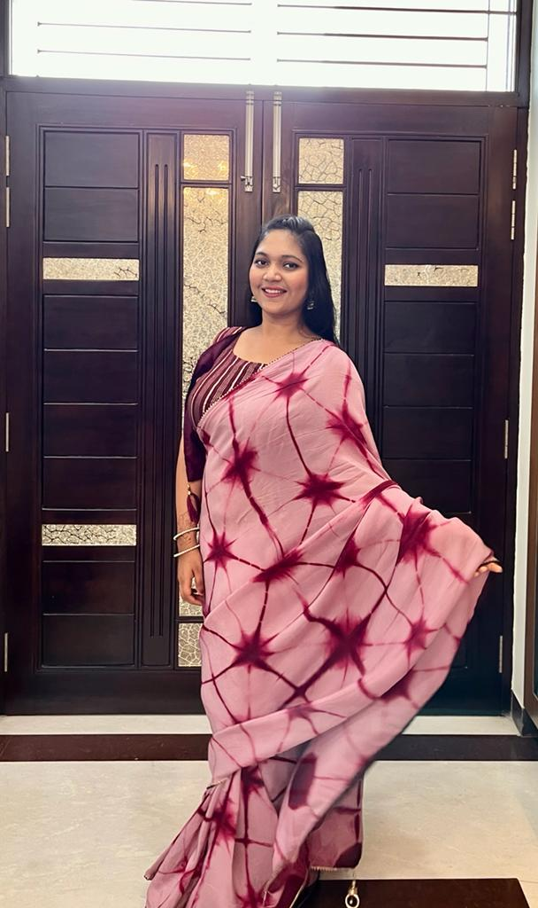
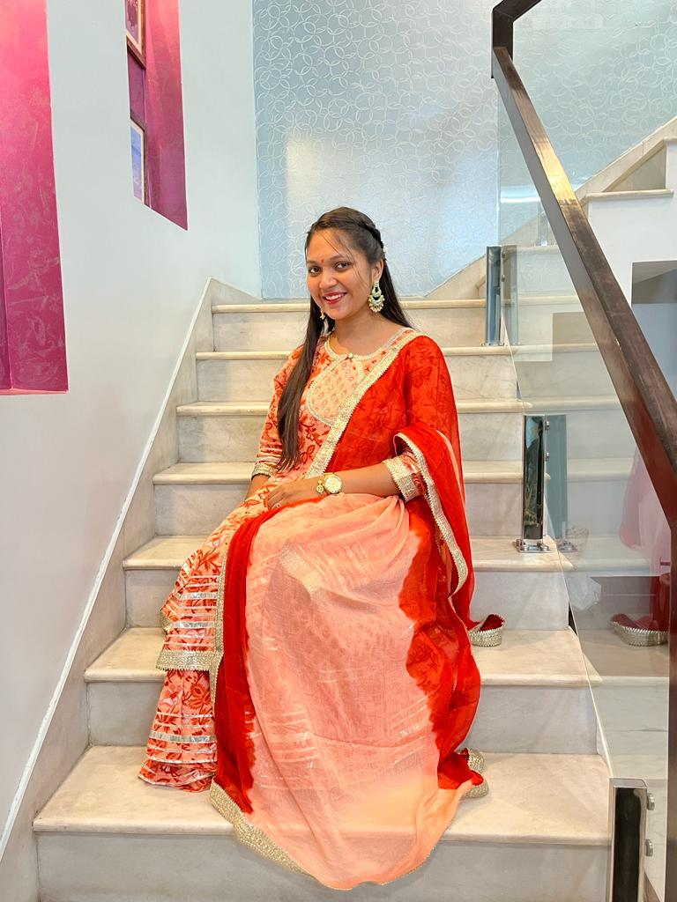
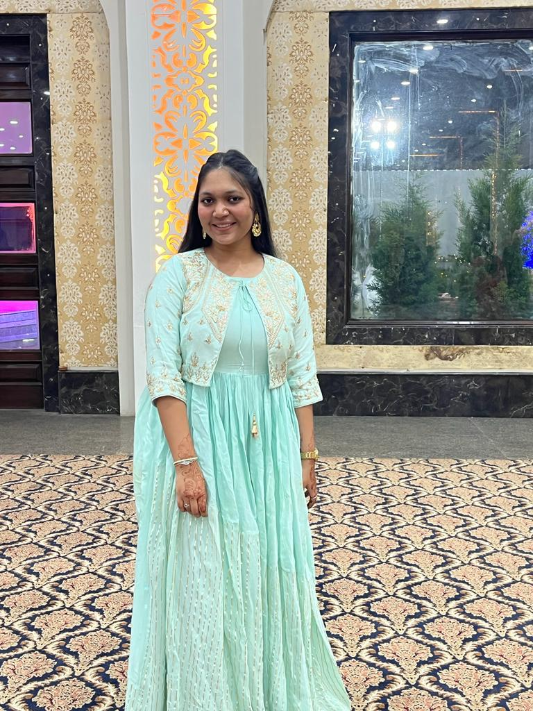
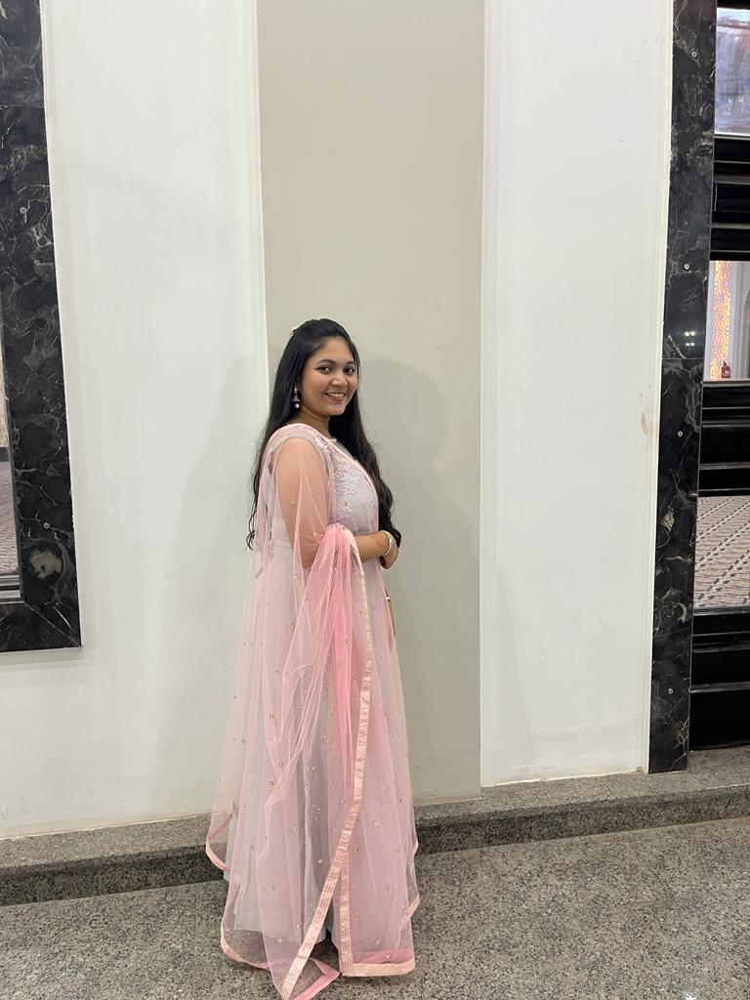
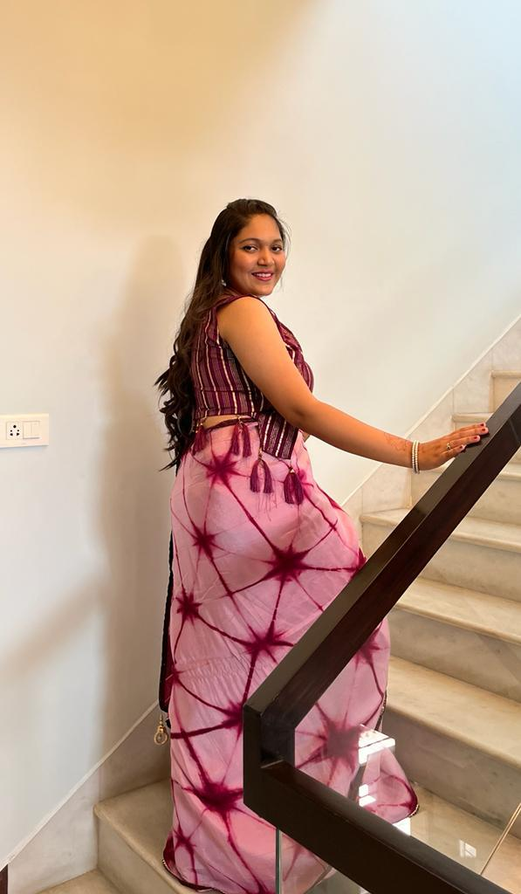

<div class="bday-container">
    <div class="spinning-rose">🌹</div>
    <h1 class="rainbow-text">✨ HAPPY BIRTHDAY GINNI ✨</h1>
    
    <div class="image-explosion">
        
        
        
        
        
    </div>

    <div class="cake-float">🎂</div>

    <marquee scrollamount="15" direction="left" style="background: yellow; color: red;">
        WISHING YOU A LONG LIFE... STAY BLESSED... PARTY HARD BUT DRINK MILK... 🍫🎈🎁🔥✨
    </marquee>
</div>

<style>
    .bday-container {
        background-image: url("imgg.jpg"));
        background-size: cover;
        min-height: 500px;
        position: relative;
        text-align: center;
        border: 15px double #00ff00;
        overflow: hidden;
        font-family: "Comic Sans MS", cursive;
    }

    .rainbow-text {
        font-size: 4rem;
        animation: jitter 0.1s infinite;
        text-shadow: 4px 4px #ff0000, -4px -4px #0000ff;
        background: white;
        display: inline-block;
        padding: 10px;
    }

    /* The Image Pop-up Animation */
    .pop-img {
        position: absolute;
        width: 150px;
        height: 150px;
        border: 5px solid gold;
        border-radius: 50%; /* Makes them look like stickers */
        object-fit: cover;
        opacity: 0;
        transform: scale(0);
        animation: pop-in-shake 0.5s forwards infinite alternate;
        box-shadow: 0px 0px 20px white;
    }

    @keyframes pop-in-shake {
        0% { opacity: 1; transform: scale(1) rotate(0deg); }
        100% { opacity: 1; transform: scale(1.1) rotate(5deg); }
    }

    @keyframes jitter {
        0% { transform: translate(0,0); }
        50% { transform: translate(5px, -5px); }
        100% { transform: translate(-5px, 5px); }
    }

    .spinning-rose { font-size: 100px; animation: spin 1s linear infinite; }
    
    @keyframes spin { from { transform: rotate(0deg); } to { transform: rotate(360deg); } }

    .cake-float { font-size: 120px; animation: bounce 0.5s ease-in-out infinite alternate; }
    
    @keyframes bounce { from { transform: translateY(0); } to { transform: translateY(-50px); } }
</style>
